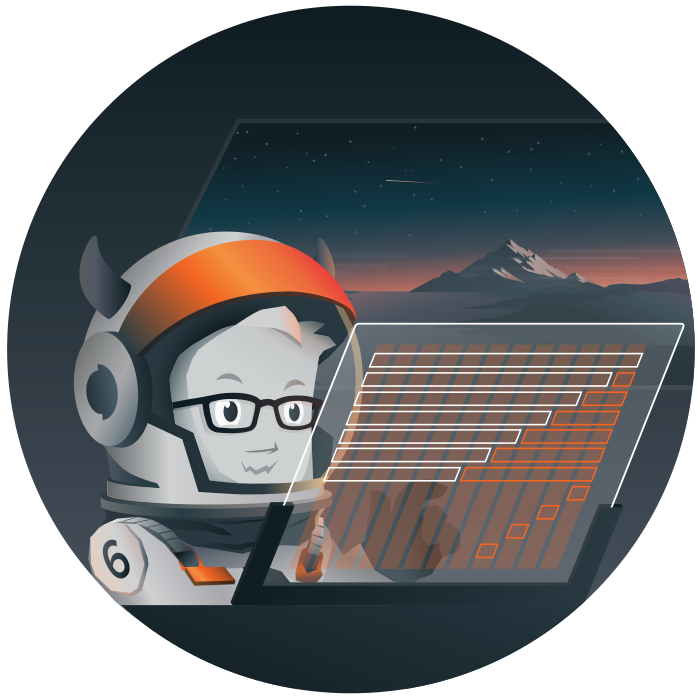
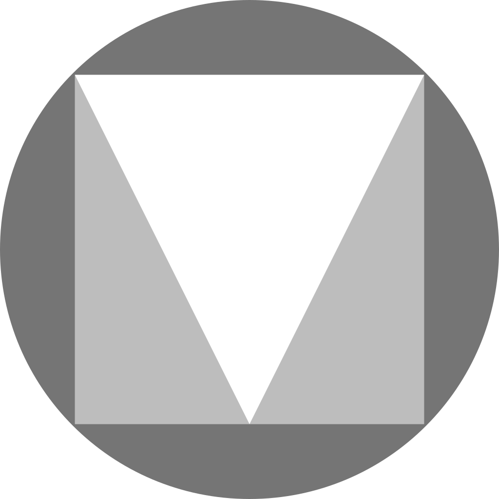
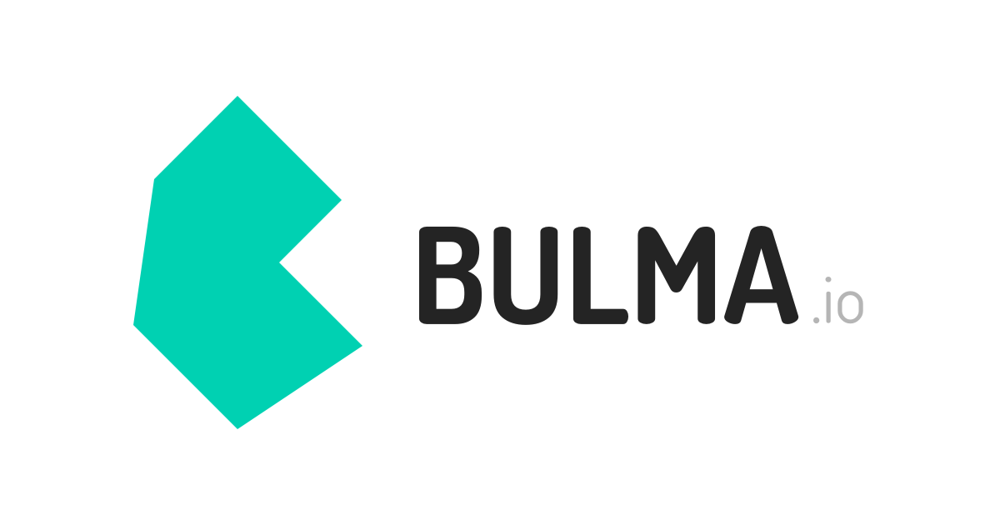
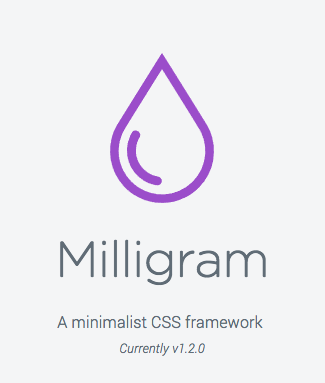
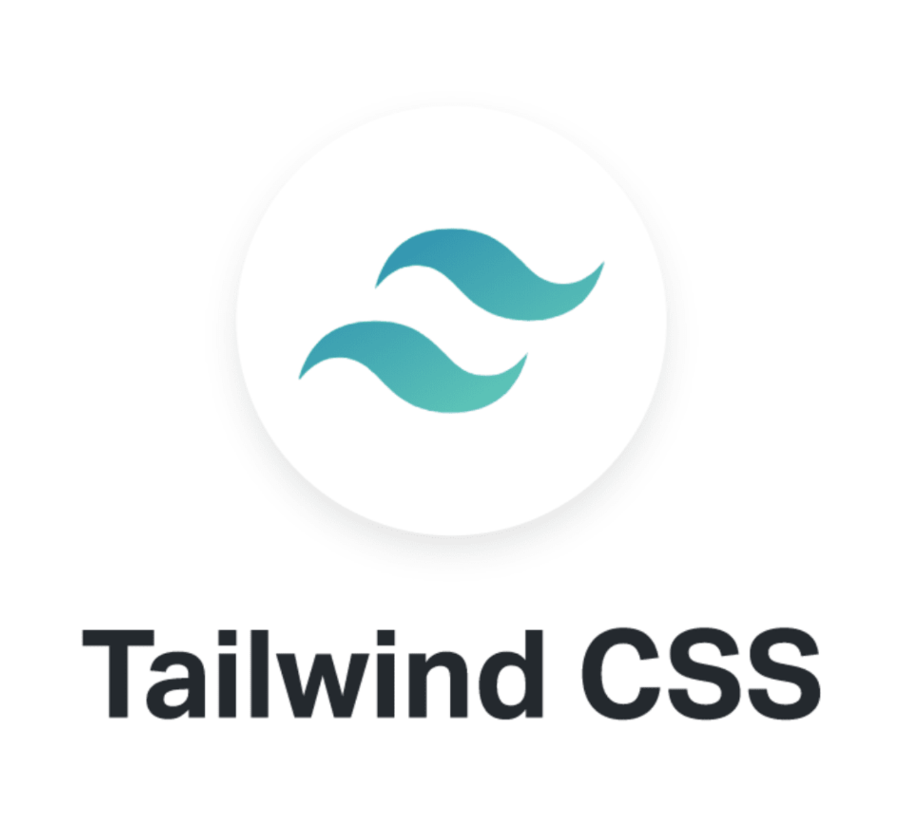

Look & Feel
Look & feel es una expresión inglesa que puede tener diferentes significados dependiendo del
contexto en que se utilice.
Significa textualmente el “aspecto y tacto” de determinados productos.
En contexto de desarrollo, el significado más apropiado sería ”aspecto y comportamiento”.
El aspecto y comportamiento de una GUI es el conjunto de propiedades y características que le dan
una identidad visual única y pueden ser percibidos de manera diferente de acuerdo con cada usuario.
El aspecto o look de las interfaces se define por los siguientes componentes:
- Paleta de colores
- Imágenes
- Diseño
- Opciones de fuente
- Estilo general
- Disposición de los elementos
El comportamiento de las interfaces esta influido por la interacción, que se determina por las siguientes características.
- El movimiento y la respuesta de los componentes dinámicos, como menús desplegables, botones, formas y galerías.
- Los efectos de sonido.
- La rapidez con que las páginas y las imágenes se cargan.
El aspecto y el comportamiento de un proyecto web son dos cuestiones fundamentales. Es importante realizar un análisis previo para establecer que queremos reflejar, ya que al instante muestra una actitud a tus clientes antes de empezar a leer el contenido en el sitio. El look and feel de un proyecto web también se puede describir como su personalidad. La cual debe coincidir con la actitud la empresa y sus objetivos sin dejar de encajar en las expectativas del usuario.
Forms
Un formulario web es un elemento del sitio web en el que los usuarios de internet pueden dejar sus datos o información, enviarla a un servidos para su procesamiento a cambio de recibir algo.
Frameworks
Un framework es un conjunto de reglas y convenciones que se usan para desarrollar software de manera más eficiente y rápida. Estos marcos de trabajo se emplean para ahorrar tiempo y esfuerzo en el desarrollo de aplicaciones, ya que proporcionan una estructura básica que se puede utilizar como punto de partida.
Es un framework de código abierto desarrollado por Mark Otto y Jacob Thornton en 2011. Se creó originalmente como una solución interna para twitter y se ha convertido en una herramienta esencial para el desarrollo web.
Ventajas
- Desarrollo rápido
- Adaptabilidad
- Coherencia
- Compatibilidad
- Comundad activa
- Personalización

Es un framework de interfaz de usuario responsivo. Foundation proporciona una cuadrícula responsive e incluye componentes de interfaz de usuario html y css, etc,
Beneficios
- La actualización de Foundation 5 a la versión 6.0 redujo al mínimo el tamaño de archivo del framework. Con 60 KB para CSS y 84 KB para JavaScript.
- Debido a su estructura modular y a la libertad en la selección, es posible reducir el tamaño de este entorno de trabajo aún más.
- La combinación del grid flexible con los diversos atributos ARIA implementados por ZURB, proporciona las opciones básicas para proyectos web multiplataforma y multidispositivo.

Un sistema de diseño de web y de software desarrollado por google. Ofrece Documentación sobre la funcionalidad y uso sugerido de los elementos, estandarización, recursos de aprendizaje y soporte para nuevas funcionalidades en el futuro.
Beneficios
Memorabilidad y asociabilidad del lenguaje gráfico de google, recursos disponibles, soporte para android, flutter y web, simplificación del estilizado del software, etc.
Soporte
MD es un sistema de diseño que tiene constantemente saca recibe implementaciones. El equipo de desarrollo a cargo del proyecto ha publicado un roadmap que enlista todo en lo que están trabajando.
Simplicidad
Como cualquier otro framework, Material Design simplifica la tediosa tarea de estilizar software bajo un sistema previamente diseñado por expertos, lo que brinda un nivel extra de calidad a nuestros proyectos.

Bulma es un framework CSS basado en Flexbox que está compuesto solamente de clases CSS por lo cual el código HTML no tendrá ningún efecto sobre el estilo de la página. Bulma está enfocado en la filosofía de mobile-first por lo cual es responsivo y muy fácil de usar. Fue creado por Jeremy Thomas en el 2016.
Diseño responsivo
Bulma esta optimizado para un diseño responsivo. La mayoría de los elementos se acomodarán vertical mente y el nav desaparecerá automáticamente.

Es un framework CSS pequeño (2kb) pero poderoso que ofrece estlos para un desarrollo web eficiente. Está calificado entre los tres mejores frameworks CSS. Su objetivo principal es ofrecer n conjunto de esilos y componentes básicos que faciliten la creación de sitios we limpios y atractivos sin agregar una gran cantidad de código innecesario.
Ventajas
- Pesa 2kb
- Diseño minimalista
- Incluye Flexbox grid
- Fácil de aprender
Desventajas
- Falta de presonalización
- Poco conocido

Tailwind es un framework CSS que permite un desarrollo ágil, basado en clases de utilidad que se pueden aplicar facilmente al HTML y unos flujos de desarrollo que permiten optimizar el peso del CSS.
Funcionamiento
Funciona escaneando todos sus archivos HTML, componentes JavaScript y cualquier otra plantilla en busca de nombres de clases, generando los estilos correspondientes y luego escribiéndolos en un archivo CSS estático. Es rápido, flexible y confiable, sin tiempo de ejecución.
Ventajas
- Proceso de desarrollo más rápido.
- Te ayuda a practicar CSS ya que las utilidades son similares.
- Todas las utilidades y componentes son personalizables.
- El tamaño total del archivo para la producción suele ser pequeño.
- Puedes usar todas las clases de Tailwind dentro de un archivo css a través de “@apply”

Dirección de arte
Hoy en día, al visitante de un proyecto web se le seduce mediante la estética y el mensaje humano y
emocional. Conseguir o no los objetivos de la empresa depende del arte que se le imprima al diseño
del
proyecto web.
La dirección de arte, no es solo para el cine, anuncios o escenografías. Los soportes digitales,
como la web, también necesitan de esa chispa de autenticidad.
La dirección de arte web se trabaja a partir del documento estratégico de la marca o Brand Book. Este documento recoge información relativa a la propuesta de valor junto con la estrategia general del negocio.
Con toda la información recabada de la empresa, se puede definir un modelo o tendencia visual hacia donde ira el diseño web. En esta fase también se plantean las fortalezas y debilidades de la nueva imagen, así como planteamiento de soluciones.
Este paso incluye la elaboración de todo el material gráfico del proyecto web. Se trata de crear un sistema de marca adecuado formado por imágenes, iconografía, gama cromática diseño vectorial. Los mejores proyectos web ofrecen mas riqueza visual, porque seduce mas al usuario y demuestra una apuesta fuerte por la marca y sus valores.
En esta fase ponemos ya a la práctica toda la creación que tenemos en borrador para acabarla y presentarla.